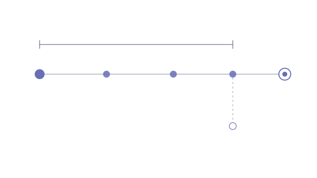

A real-time conversational AI agent needed to know what kind of company it was speaking to, without interrogating the person to find out. Moving that question off the script and onto a data lookup solves a conversation problem by creating a systems one: the answer now has to arrive fast enough that nobody notices a pause.
- Built a cascading resolution path: exact domain match first for high confidence, then parallel fuzzy name matching, then a scoring pass over firmographic fields to derive the segment
- Wrapped the entire request in a hard deadline: if anything is slow for any reason, a safe default wins rather than the conversation hanging
- Moved third-party enrichment off the critical path entirely, once its API turned out to be incompatible with a sub-second budget
- Made confidence degrade explicitly at every step: uncertain matches are flagged for human review instead of being silently guessed at
A deployed service that resolves a known company in well under a second, and falls back to a safe default in about the same time. It runs read-only against a frozen schema, with the eventual switchover reduced to configuration rather than code.
- Node · TypeScript · Express
- Railway (container deployment)
- Third-party CRM & enrichment REST APIs
- Short-TTL in-process cache
Designing for the deadline, not the happy path
The binding constraint here was never accuracy. It was time. A live conversation gives you a budget measured in hundreds of milliseconds, and every step in the cascade is a network call that can stall. So the deadline became the architecture: one hard budget wraps the whole request, and nothing downstream is permitted to hold the conversation open past it.
Which makes the test that matters a failure test rather than a success one. I pointed the service at the real API with a deliberately invalid key and confirmed that every step of the cascade, failing in turn, still produced a clean default response in about a second, never hanging, never throwing back to the caller. A lookup that returns a safe answer quickly is worth far more than one that returns the right answer after the moment has passed.
The dependency that couldn't be waited on
The original specification assumed the enrichment provider supported real-time lookups. Reading its API reference properly showed otherwise: you create a search, then poll for results. No endpoint returns company data in a single response, which makes it structurally incompatible with a sub-second budget, and no amount of tuning closes that gap.
Rather than treat that as a blocker, the fix was to invert the timing. The service fires the search and never waits on it; when the result eventually lands it is written back, so the next lookup for that company is instant. A cache that fills itself as a side effect of missing. It also capped a cost that would otherwise have scaled with every conversation, turning an unbounded per-call expense into a one-shot one.